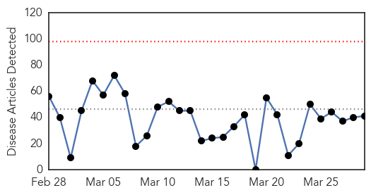
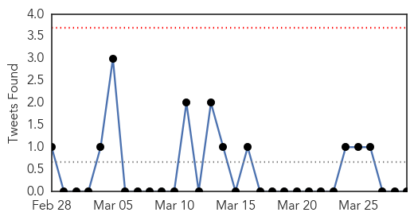
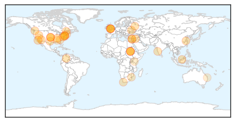
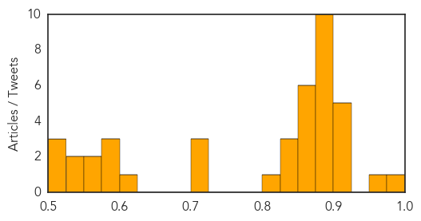
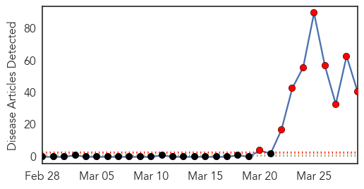
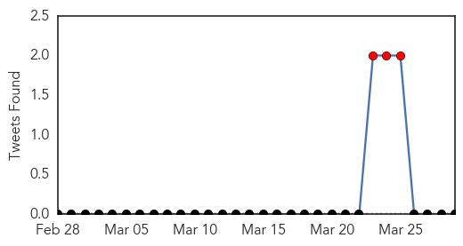
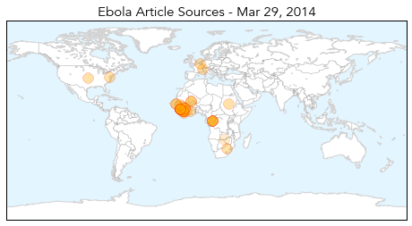
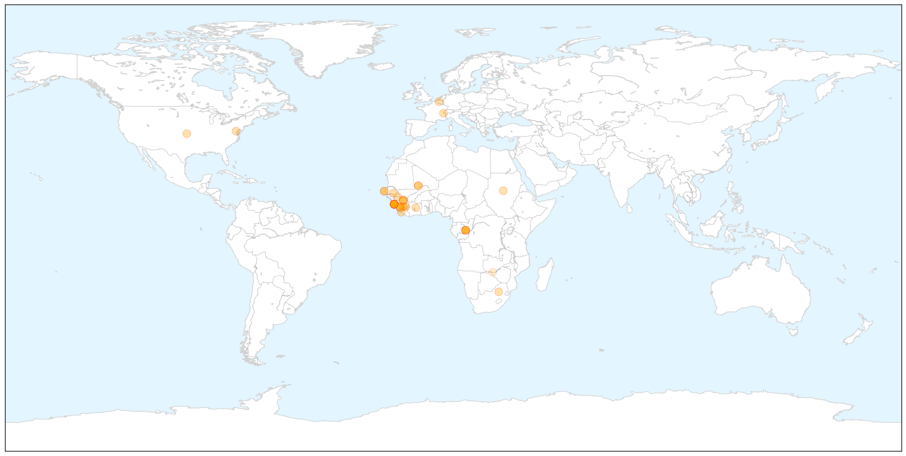
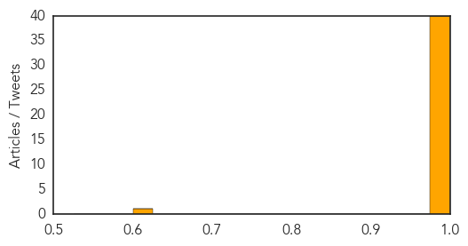

Unknown
30-Day Web Trend
0 alerts, 0 warnings

30-Day Twitter Trend
0 alerts, 0 warnings

Article Locations

Article Confidences
Top Articles:
- 0.991
- Heartland virus plagues Missouri and Tennessee
- 0.960
- Fears as reports link pet cats and a dog to TB infections
- 0.917
- Chicago Tribune
- 0.917
- Chicago Tribune
- 0.917
- Chicago Tribune
- 0.917
- Chicago Tribune
- 0.910
- The world windows to Thailand
- 0.883
- KRNV, Reno, NV
- 0.883
- KRNV, Reno, NV
- 0.883
- KRNV, Reno, NV
- 0.883
- KRNV, Reno, NV
- 0.883
- KRNV, Reno, NV
- 0.883
- KRNV, Reno, NV
- 0.883
- KRNV, Reno, NV
- 0.883
- KRNV, Reno, NV
- 0.883
- KRNV, Reno, NV
- 0.883
- KRNV, Reno, NV
- 0.866
- US, Russian foreign ministers to meet in Paris on Sunday to discuss Ukraine
- 0.866
- Russia's Lavrov, U.S. Kerry discuss Ukraine, timing of further contact
- 0.866
- China aircraft spots 3 suspicious objects in new Malaysia jet search area -Xinhua
- 0.866
- One more victim found in Washington state mudslide debris field
- 0.866
- Moody's places Russia's government bond rating on review for downgrade
- 0.866
- Teenager treated for severe lung damage after catching TB from her pet kitten
- 0.841
- 7 fall ill after drinking school cooler water
- 0.837
- Britons warned over DOGS after child catches TB from family pet
- 0.837
- Britons warned over DOGS after child catches TB from family pet
- 0.802
- Collective will can curb TB epidemic
- 0.707
- UNFPA provides urgent relief to flood victims - South Sudan
- 0.706
- Aiken Co. resident exposed to rabies
- 0.706
- International Medical Corps Delivering Lifesaving Medical Supplies Following Typhoon Haiyan - Philippines
- 0.619
- Raw meat could be cause of dead dogs, scientist warns
- 0.586
- Case of tuberculosis confirmed at Liberty High School
- 0.585
- Kenya : How many ‘Satrins’ will it take to take health sector seriously?
- 0.579
- China reports three more bird flu cases in humans
- 0.560
- Over a million flee as S. Sudan conflict rages - Africa
- 0.559
- UN: Over a million flee South Sudan conflict
- 0.544
- Middle East Online
- 0.541
- ‘Misdiagnosis’ of Lyme disease fells Coast woman
- 0.521
- More than a million flee South Sudan conflict
- 0.517
- More than a million flee South Sudan conflict
- 0.501
- One million displaced by S Sudan conflict
Top Tweets:
-
No tweets found for Mar 29, 2014
Ebola
30-Day Web Trend
9 alerts, 0 warnings

30-Day Twitter Trend
3 alerts, 0 warnings

Article Locations

X

Article Confidences
Top Articles:
- 1.000
- Guinea seeks to prevent spread of Ebola virus in capital
- 1.000
- 70 Dead In Guinea Ebola Outbreak
- 1.000
- Ebola Outbreak Spreads to Conakry, Poses New Challenges
- 1.000
- Ebola spread to Guinea capital raises fears
- 1.000
- Senegal shuts land border with Guinea to prevent Ebola spreading
- 1.000
- Guinea battles to contain Ebola as Senegal closes its border
- 1.000
- Guinea issues bushmeat warning after Ebola outbreak:Thursday 27 March 2014
- 1.000
- West African nations scramble to contain Ebola threat:Tuesday 25 March 2014
- 1.000
- EU Pledges EUR 500000 To Help Contain Ebola Outbreak In West Africa
- 1.000
- Senegal shuts land border with Guinea to prevent Ebola spreading
- 1.000
- Ebola spread to Guinea capital raises fears
- 1.000
- Guinea scrambles to contain deadly Ebola outbreak
- 1.000
- Ebola epidemic could become global crisis, experts warn
- 1.000
- W. African nations scramble to prevent spread of Ebola
- 1.000
- Senegal shuts land border with Guinea
- 1.000
- Ebola Outbreak Spreads to Conakry Poses New Challenges
- 1.000
- Ebola spread to Guinea capital raises fears
- 1.000
- Senegal shuts land border with Guinea to prevent Ebola spreading
- 1.000
- No outbreak of Ebola virus in Nigeria -FG
- 1.000
- Ebola virus reaches Guinea's capital Conakry
- 1.000
- Ebola 'a regional threat' as contagion spreads
- 1.000
- Guinea: Ebola death toll reaches 70
- 1.000
- Ebola outbreak in Guinea may spread to Liberia
- 0.999
- Scant Funds, Rare Outbreaks Leave Ebola Drug Pipeline Slim
- 0.999
- Guinea scrambles to stop spread of Ebola in the capital
- 0.999
- Scientists are closing in on drugs that may stop the deadly Ebola virus
- 0.999
- the edge of knowledge
- 0.999
- Doctors group sounds alarm over Ebola outbreak
- 0.999
- No Guinea travel warning despite Ebola outbreak: WHO
- 0.999
- The most from the coast
- 0.999
- Corgenix and Viral Hemorrhagic Fever Consortium Partners to Expand West African Ebola Virus Testing Capabilities BioNews Texas
- 0.996
- Guinea on edge as Ebola spreads
- 0.995
- Corgenix and Research Partners to Expand Ebola Virus Testing Capabilities in Sierra Leone
- 0.995
- Beware of bats: Guinea issues bushmeat warning after Ebola outbreak
- 0.993
- Ebola Outbreak in Guinea Confirmed
- 0.992
- West Africans Worried About Ebola Outbreak
- 0.992
- Guinea seeks to stem spread of deadly Ebola virus in capital
- 0.987
- Senegal shuts land border with Guinea to prevent Ebola spreading
- 0.985
- Senegal shuts land border with Guinea to prevent Ebola spreading
- 0.976
- UNICEF steps up response in Guinea as Ebola reaches capital - Guinea
- 0.619
- African presidents conspiring against Africa
Top Tweets:
-
No tweets found for Mar 29, 2014